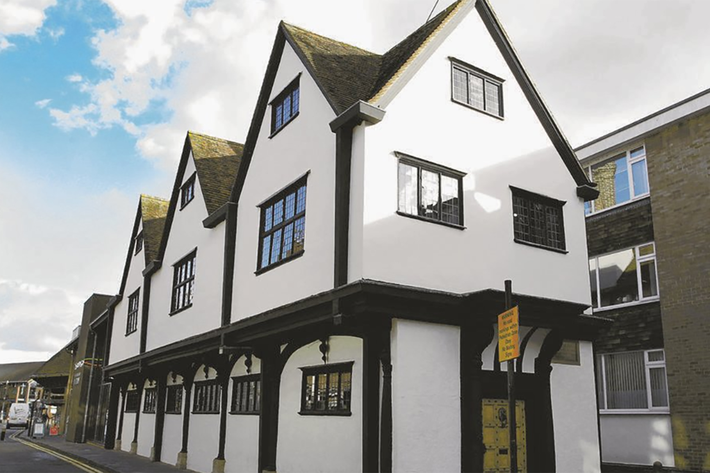
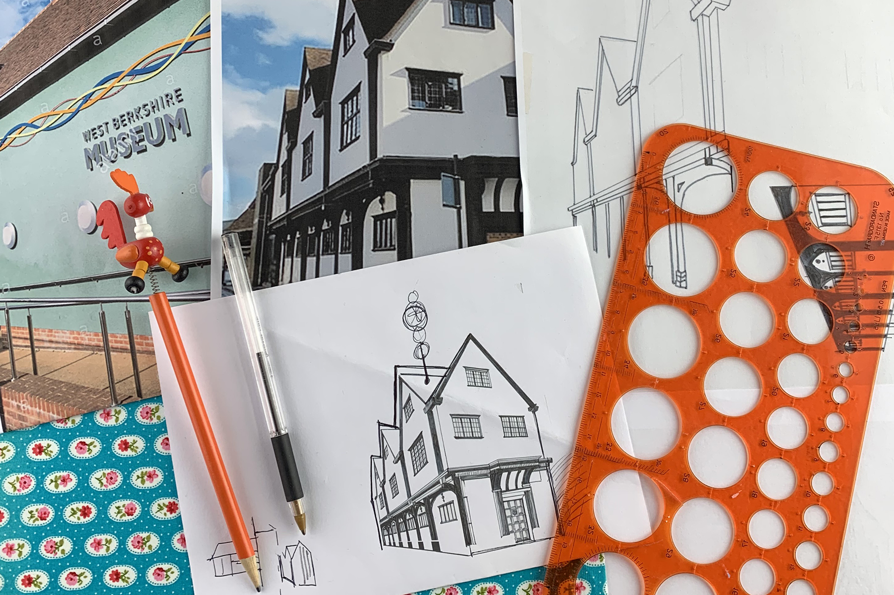
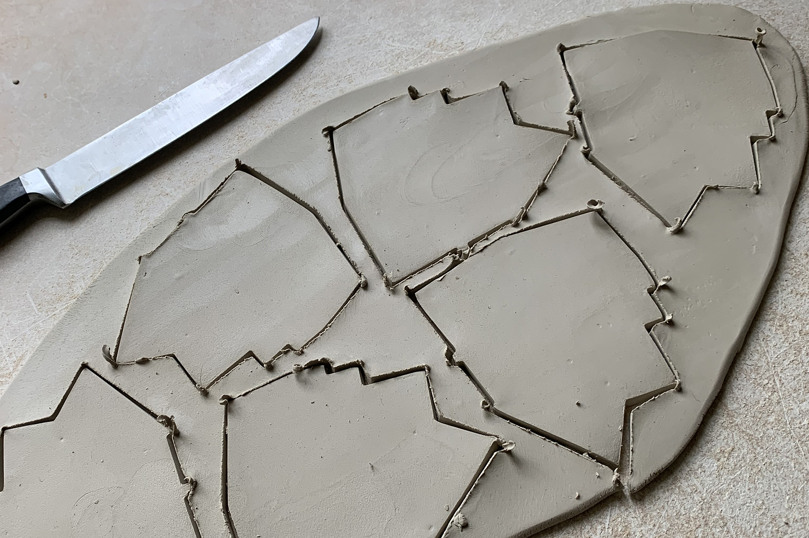
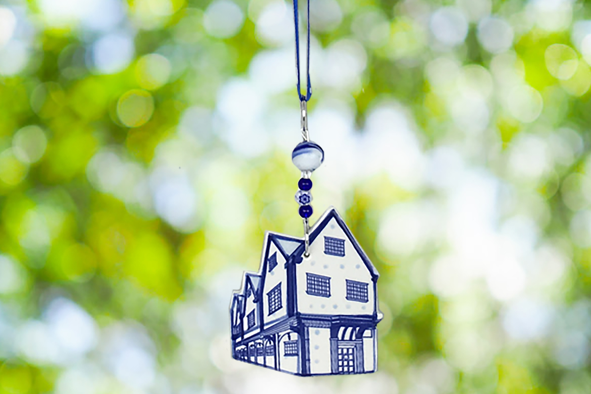
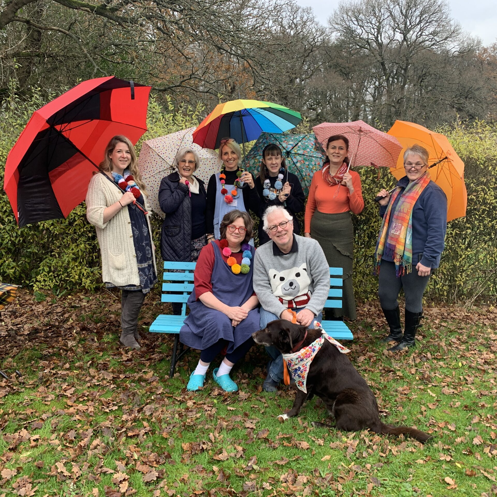

We work with shops, galleries, museums, cathedrals and heritage venues looking for distinctive handmade ceramic decorations. Whether you are interested in stocking our collections or commissioning an exclusive design for your venue, Roelofs & Rubens offers a personal and collaborative approach.
Whether you are looking to stock our handmade decorations or commission an exclusive piece for your venue, we would love to hear from you.
Seasonal favourites, year-round collections and thoughtful handmade gifts — ideal for shops, galleries and retailers looking to stock distinctive ceramic decorations.
Enquire about stockingExclusive handmade decorations created for museums, cathedrals, castles, heritage sites and other special places — designed to reflect the character of your venue.
Discuss a commission
Share your venue, shop or idea with us, whether that is a photo, reference, sketch or simple outline. We can work from an existing concept or help shape something from the very beginning.

We turn your brief into initial design proposals for you to review. From there, we refine the idea together until it feels right for your venue and your visitors.

Once the design is approved, we begin production. Each bespoke decoration is handmade to order, with timing shaped around the scale and detail of the project.

Your finished decoration is created exclusively for your venue or shop — a unique ceramic piece designed to capture the character of your place.

Roelofs & Rubens has been creating handmade ceramic decorations since 2006, combining traditional craftsmanship with a distinctive sense of warmth, character and charm. We work closely with every partner, whether supplying collections for shops or developing bespoke pieces for special venues.
From first conversation to finished decoration, we take a personal and collaborative approach, creating ceramics that feel thoughtful, unique and true to the places they represent.
We have created bespoke decorations inspired by iconic places including Stonehenge, Tower Bridge, Big Ben and Buckingham Palace.